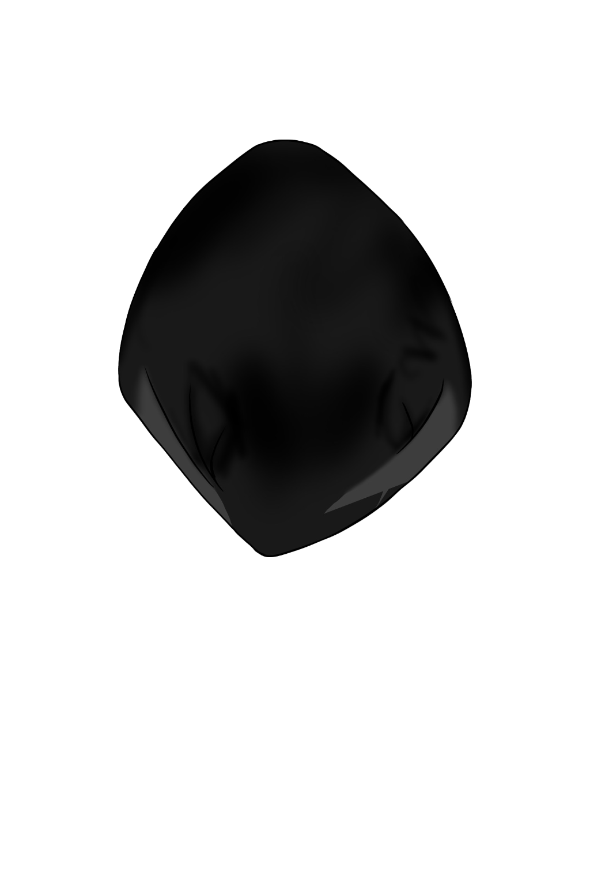
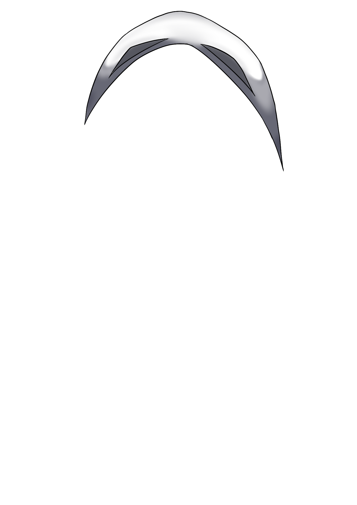
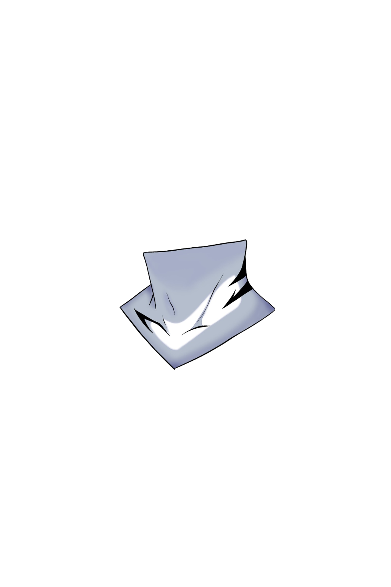
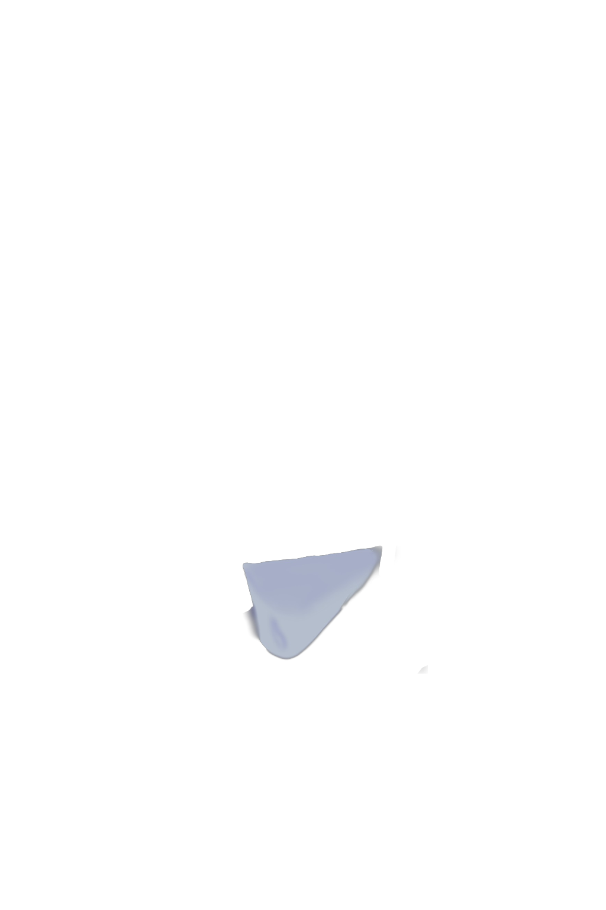
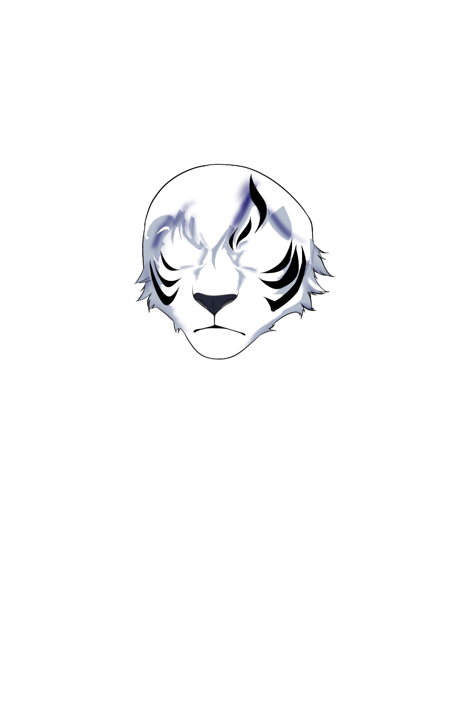
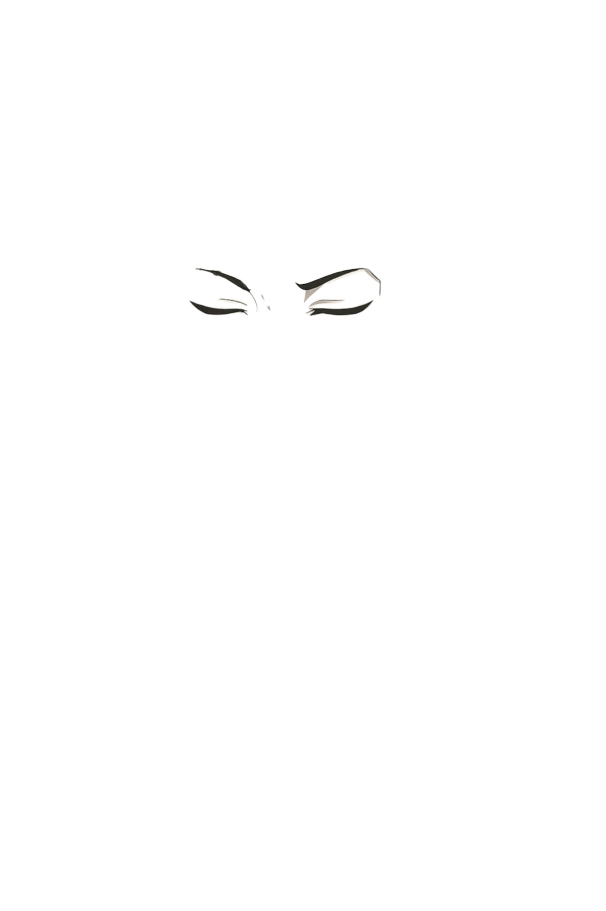
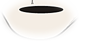
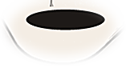
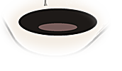
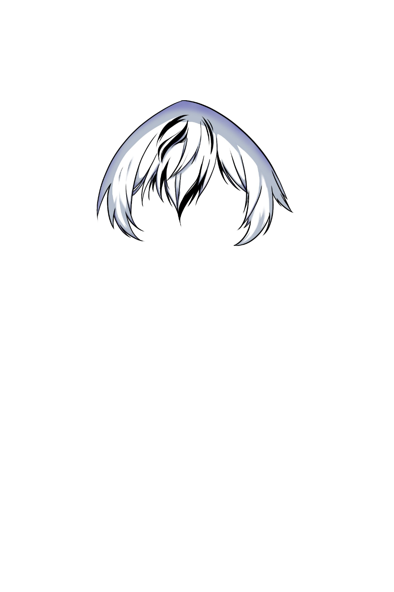
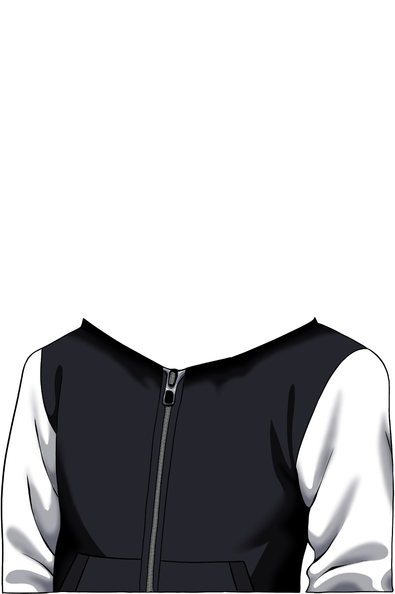
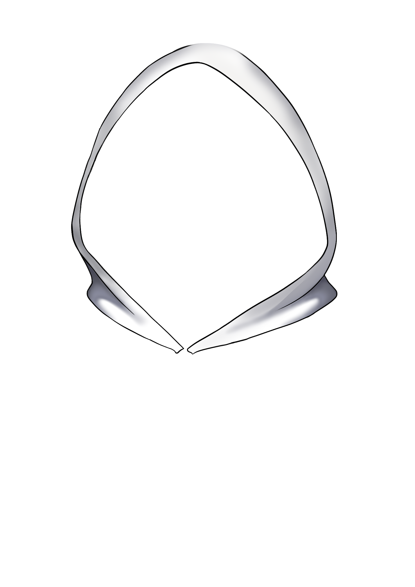
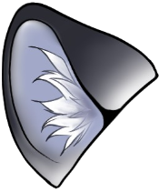
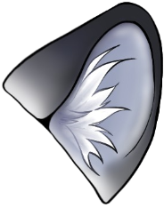
🔗 ตัวช่วย: -
พื้นหลัง:
กด 🎤 เปิดไมค์แล้วพูด = ปากขยับตามเสียง · ขยับเมาส์ = หันหน้า+ตามอง · เอาเมาส์ชิดขอบล่างเรียกแถบเครื่องมือ
⚠ โหมดทดสอบ — ปาก/หัวขยับเอง ไม่ฟังเมาส์และไมค์
คลิกที่นี่เพื่อกลับโหมดใช้งานจริง